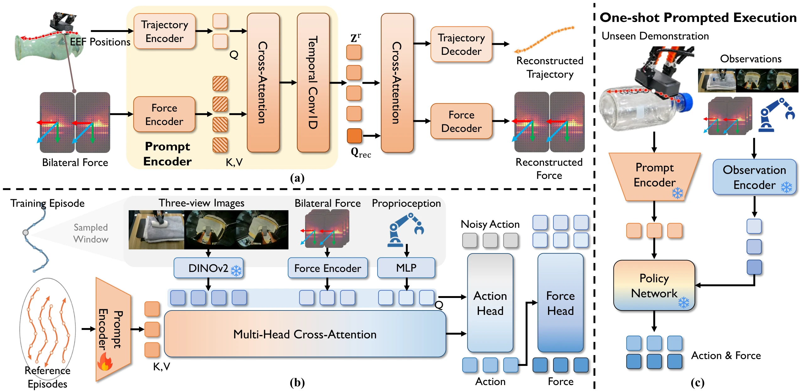

Contact Trajectory Prompting
In-Context Transfer of Contact-Rich Behaviors from a Single Demonstration
Overview video
A single demonstration specifies the desired contact behavior, including interaction intensity. CTP uses online feedback to execute it on an object unseen during training, without retraining.
Prompt control
Method

Prompt encoding. The reference is sampled across time and force changes. An encoder compresses end-effector motion and both fingers’ force measurements into ordered tokens, pretrained by reconstructing the sampled signals.
Policy training. Current images, robot state, and force measurements attend to the prompt as the policy predicts short action chunks.
One-shot execution. A new reference is encoded once. The robot then acts using live observations, with the prompt encoder and policy fixed.
One-shot transfer
We move each unseen object after recording the guided reference, then run CTP autonomously.
Baseline comparison
Other wiping tools
For wiping, the policy was trained with an eraser. Sponge and cloth executions each use a reference with the same tool.
Full process
Recording a reference and running the policy in one continuous view.